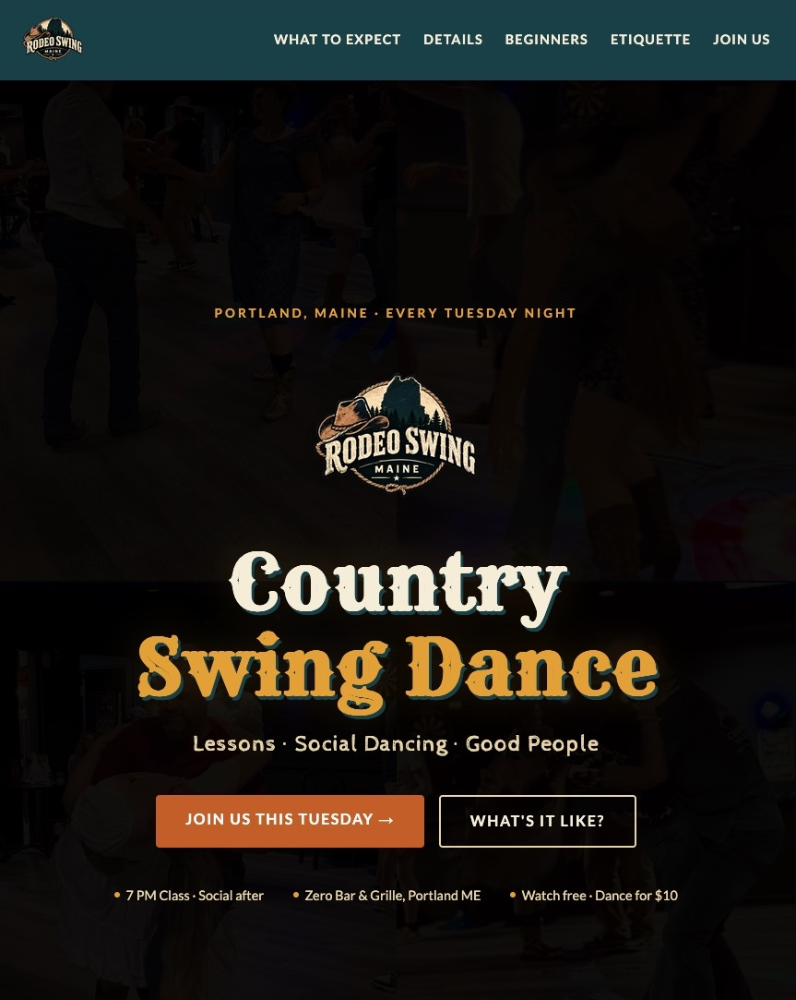

A fast, welcoming website for a weekly country swing dance night in Portland, Maine — built to turn local searches into people on the dance floor.

Rodeo Swing Maine runs a weekly country swing dance class and social in Portland. The goal of the site was simple: help a first-timer find the event, understand exactly what to expect, and feel comfortable walking in the door on a Tuesday night.
The result is a single-page site with a warm, western-inspired look, clear answers to the questions beginners actually ask, and the technical groundwork to show up in local search.
The site is built to be found by people searching for country dancing in southern Maine and New Hampshire. It includes complete Open Graph and Twitter card metadata, plus three Schema.org structured data blocks — a recurring DanceEvent with schedule and pricing, a LocalBusiness listing, and a FAQPage — so search engines can surface the key details directly in results.
A deep teal, sand, and sienna palette with Rye and Cabin Sketch typography gives the site a friendly honky-tonk feel without getting kitschy. Rope-style dividers separate sections, and generous spacing keeps the page easy to scan on a phone, which is where most visitors will first see it.